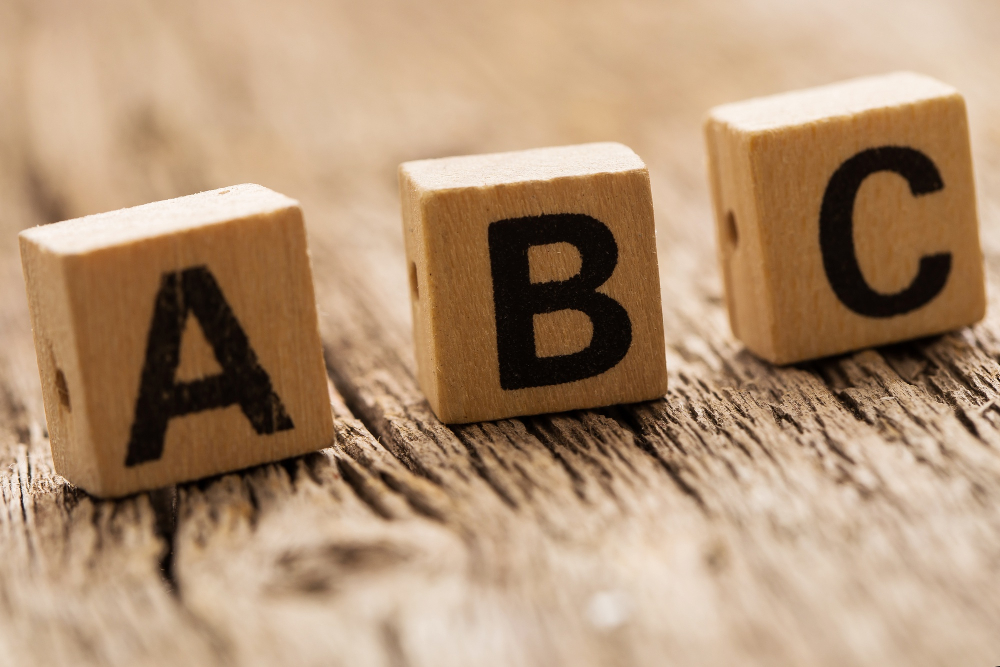

О сайте
ABC тройки такие неуловимые, ограниченные, но в то же время вездесущие! И действительно их находят во всех областях математики (Геометрии, Теории чисел, Алгебре), однако они не так просты как кажутся! На этом сайте мы поймаем их и изучим.
